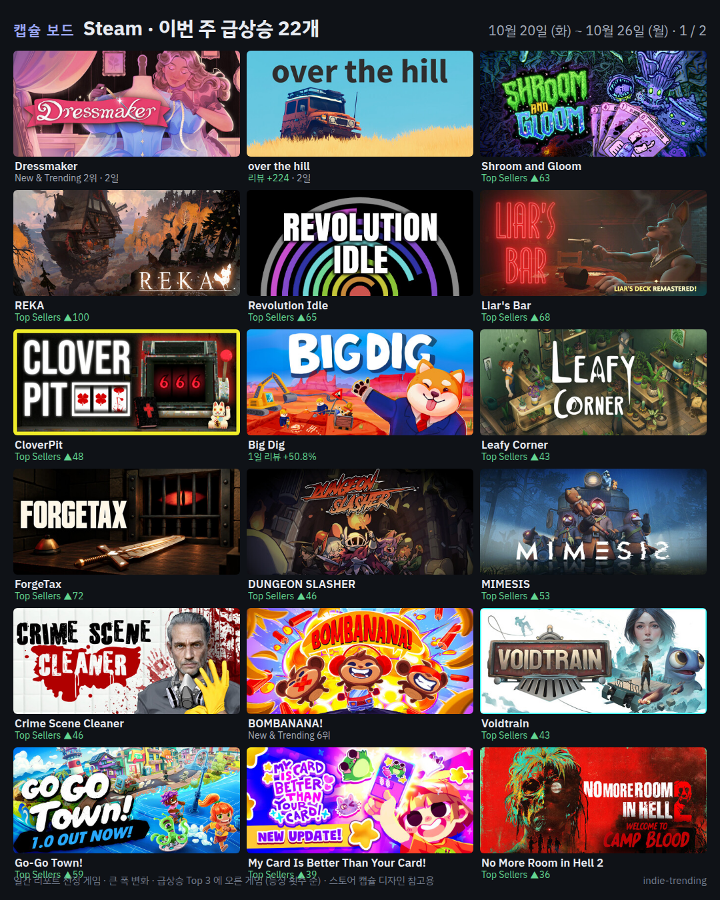
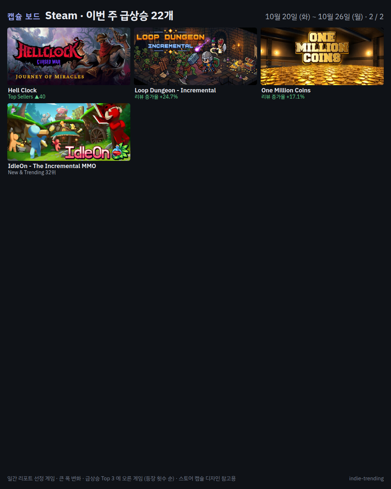
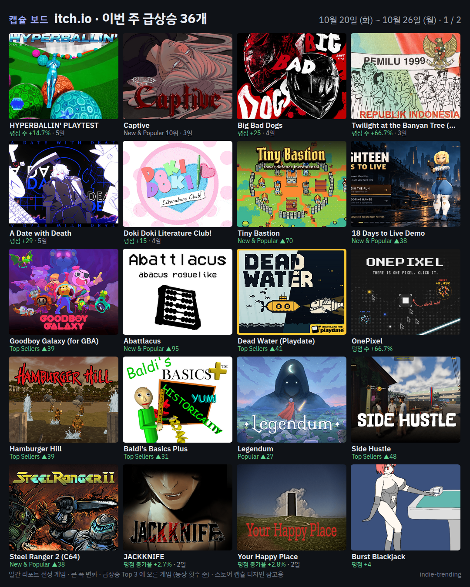
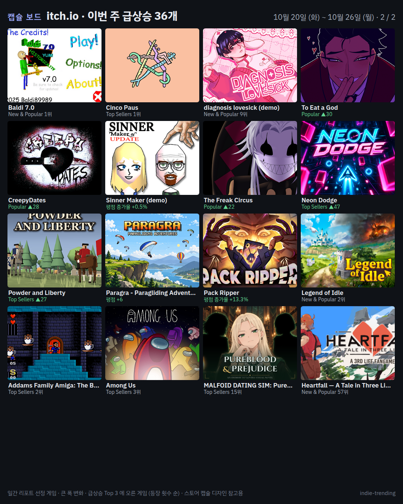

주간 리포트 · 무엇을 만들지 정하는 데 쓰는 두 가지
성공률이 높으면서 1년 출시 수가 적은 태그가 "공급이 적은 틈"입니다. 표는 리뷰 500+ 비율 내림차순이고, 초록 줄은 틈 후보입니다. 표본 30개 미만 태그는 순위에서 뺍니다.
| # | 태그 | 1년 출시 | 리뷰 500+ | 리뷰 100+ | 리뷰 10 미만 | 중앙값 | 틈 지수 | 대표 성공작 (리뷰 많은 순) |
|---|---|---|---|---|---|---|---|---|
| 1 | Dating Sim28개 · 58개 · 96개 | 228 | 12.3% | 25.4% | 42.1% | 16 | 41.7 | |
| 2 | Base Building41개 · 80개 · 240개 | 451 | 9.1% | 17.7% | 53.2% | 0 | 23.8 | |
| 3 | Souls-like18개 · 38개 · 100개 | 207 | 8.7% | 18.4% | 48.3% | 10 | 31.0 | |
| 4 | City Builder20개 · 38개 · 125개 | 241 | 8.3% | 15.8% | 51.9% | 0 | 25.6 | |
| 5 | Auto Battler30개 · 62개 · 202개 | 390 | 7.7% | 15.9% | 51.8% | 0 | 22.4 | |
| 6 | Automation43개 · 106개 · 353개 | 647 | 6.6% | 16.4% | 54.6% | 0 | 19.5 | |
| 7 | Management90개 · 234개 · 702개 | 1,400 | 6.4% | 16.7% | 50.1% | 0 | 14.3 | |
| 8 | Action RPG38개 · 79개 · 370개 | 600 | 6.3% | 13.2% | 61.7% | 0 | 16.1 | |
| 9 | JRPG14개 · 41개 · 123개 | 241 | 5.8% | 17.0% | 51.0% | 0 | 27.5 | |
| 10 | Strategy RPG18개 · 50개 · 192개 | 316 | 5.7% | 15.8% | 60.8% | 0 | 23.7 | |
| 11 | Colony Sim8개 · 17개 · 77개 | 143 | 5.6% | 11.9% | 53.8% | 0 | 22.0 | |
| 12 | Life Sim38개 · 127개 · 329개 | 691 | 5.5% | 18.4% | 47.6% | 11 | 21.4 | |
| 13 | Metroidvania9개 · 29개 · 81개 | 167 | 5.4% | 17.4% | 48.5% | 10 | 30.9 | |
| 14 | Farming Sim12개 · 37개 · 121개 | 231 | 5.2% | 16.0% | 52.4% | 0 | 26.2 | |
| 15 | Deckbuilding36개 · 92개 · 430개 | 693 | 5.2% | 13.3% | 62.0% | 0 | 15.4 | |
| 16 | Incremental68개 · 185개 · 762개 | 1,401 | 4.9% | 13.2% | 54.4% | 0 | 11.3 | |
| 17 | Interactive Fiction37개 · 99개 · 394개 | 756 | 4.9% | 13.1% | 52.1% | 0 | 14.7 | |
| 18 | Cozy47개 · 137개 · 527개 | 971 | 4.8% | 14.1% | 54.3% | 0 | 14.3 | |
| 19 | Roguelite78개 · 193개 · 1084개 | 1,679 | 4.6% | 11.5% | 64.6% | 0 | 8.9 | |
| 20 | Visual Novel46개 · 143개 · 521개 | 1,012 | 4.5% | 14.1% | 51.5% | 0 | 14.0 | |
| 21 | Roguelike77개 · 200개 · 1115개 | 1,719 | 4.5% | 11.6% | 64.9% | 0 | 8.9 | |
| 22 | Dungeon Crawler23개 · 66개 · 321개 | 533 | 4.3% | 12.4% | 60.2% | 0 | 15.8 | |
| 23 | Psychological Horror58개 · 206개 · 800개 | 1,582 | 3.7% | 13.0% | 50.6% | 0 | 10.4 | |
| 24 | Survival41개 · 110개 · 706개 | 1,100 | 3.7% | 10.0% | 64.2% | 0 | 9.6 | |
| 25 | Turn-Based Strategy25개 · 71개 · 508개 | 771 | 3.2% | 9.2% | 65.9% | 0 | 10.2 | |
| 26 | Tower Defense16개 · 43개 · 335개 | 500 | 3.2% | 8.6% | 67.0% | 0 | 11.2 | |
| 27 | Card Game26개 · 67개 · 554개 | 806 | 3.2% | 8.3% | 68.7% | 0 | 9.1 | |
| 28 | Point & Click36개 · 119개 · 672개 | 1,178 | 3.1% | 10.1% | 57.0% | 0 | 9.4 | |
| 29 | Action Roguelike34개 · 94개 · 764개 | 1,112 | 3.1% | 8.5% | 68.7% | 0 | 8.1 | |
| 30 | Horror61개 · 229개 · 1187개 | 2,135 | 2.9% | 10.7% | 55.6% | 0 | 7.2 | |
| 31 | Rhythm7개 · 24개 · 156개 | 239 | 2.9% | 10.0% | 65.3% | 0 | 16.2 | |
| 32 | Turn-Based Tactics23개 · 72개 · 543개 | 787 | 2.9% | 9.1% | 69.0% | 0 | 10.0 | |
| 33 | Walking Simulator26개 · 101개 · 489개 | 969 | 2.7% | 10.4% | 50.5% | 0 | 10.5 | |
| 34 | Survival Horror19개 · 67개 · 444개 | 723 | 2.6% | 9.3% | 61.4% | 0 | 10.6 | |
| 35 | Hidden Object20개 · 69개 · 505개 | 879 | 2.3% | 7.8% | 57.5% | 0 | 8.2 | |
| 36 | Bullet Hell20개 · 60개 · 616개 | 876 | 2.3% | 6.8% | 70.3% | 0 | 7.2 | |
| 37 | Puzzle최근 263일 표본51개 · 157개 · 1627개 | 2,400 | 2.1% | 6.5% | 67.8% | 0 | 4.0 | |
| 38 | Platformer23개 · 89개 · 965개 | 1,387 | 1.7% | 6.4% | 69.6% | 0 | 5.5 | |
| 39 | Shoot 'Em Up6개 · 18개 · 321개 | 425 | 1.4% | 4.2% | 75.5% | 0 | 5.8 | |
| 40 | 2D Platformer19개 · 83개 · 1077개 | 1,470 | 1.3% | 5.6% | 73.3% | 0 | 4.7 |
스토어 캡슐 디자인 참고용입니다. 일간 리포트의 선정 게임 · 큰 폭 변화 · 급상승 Top 3 에 오른 게임을 등장 횟수 순으로 모았습니다. 이미지 아래 한 줄은 그 주의 핵심 수치입니다.




· 모집단: Steam 검색(출시일 내림차순, Indie 태그 + 해당 태그, 게임만)을 2025-10-27 이전 출시작이 나올 때까지 넘깁니다. 태그당 최대 24페이지(100개씩)이며, 그 안에 1년을 다 못 받은 태그는 "최근 N일 표본"으로 표시합니다(출시 수는 실제보다 적게, 성공률은 리뷰가 덜 쌓여 낮게 나옵니다).
· 리뷰 수는 검색 결과의 "n user reviews"(전 언어 합계)이고, 리뷰가 없는 게임은 0으로 셉니다.
· 틈 지수 = (리뷰 100+ 비율 %) × log10(10,000 ÷ 1년 출시 수). 표본 30개 이상인 태그만 계산합니다. 자세한 정의는 rules.md §11.
· 캡슐 보드의 Steam 이미지는 스토어 header(460×215), itch 는 목록 썸네일(315×250)입니다.